Normalization
James Ashmore
2019-08-14
Last updated: 2019-10-08
Checks: 7 0
Knit directory: Heart/
This reproducible R Markdown analysis was created with workflowr (version 1.4.0). The Checks tab describes the reproducibility checks that were applied when the results were created. The Past versions tab lists the development history.
Great! Since the R Markdown file has been committed to the Git repository, you know the exact version of the code that produced these results.
Great job! The global environment was empty. Objects defined in the global environment can affect the analysis in your R Markdown file in unknown ways. For reproduciblity it’s best to always run the code in an empty environment.
The command set.seed(1701) was run prior to running the code in the R Markdown file. Setting a seed ensures that any results that rely on randomness, e.g. subsampling or permutations, are reproducible.
Great job! Recording the operating system, R version, and package versions is critical for reproducibility.
Nice! There were no cached chunks for this analysis, so you can be confident that you successfully produced the results during this run.
Great job! Using relative paths to the files within your workflowr project makes it easier to run your code on other machines.
Great! You are using Git for version control. Tracking code development and connecting the code version to the results is critical for reproducibility. The version displayed above was the version of the Git repository at the time these results were generated.
Note that you need to be careful to ensure that all relevant files for the analysis have been committed to Git prior to generating the results (you can use wflow_publish or wflow_git_commit). workflowr only checks the R Markdown file, but you know if there are other scripts or data files that it depends on. Below is the status of the Git repository when the results were generated:
Ignored files:
Ignored: .DS_Store
Ignored: .Rhistory
Ignored: .Rproj.user/
Ignored: analysis/.DS_Store
Ignored: analysis/cache/
Ignored: code/.DS_Store
Ignored: data/
Ignored: docs/.DS_Store
Ignored: shiny/
Untracked files:
Untracked: analysis/comparison.Rmd
Untracked: palette.csv
Unstaged changes:
Modified: analysis/_site.yml
Modified: analysis/annotation.Rmd
Deleted: analysis/atlas.Rmd
Modified: analysis/clustering.Rmd
Modified: analysis/dimension.Rmd
Modified: analysis/doublet.Rmd
Modified: analysis/feature.Rmd
Deleted: analysis/import.Rmd
Modified: analysis/integration.Rmd
Modified: analysis/markers.Rmd
Modified: analysis/quality.Rmd
Modified: analysis/trajectory.Rmd
Note that any generated files, e.g. HTML, png, CSS, etc., are not included in this status report because it is ok for generated content to have uncommitted changes.
These are the previous versions of the R Markdown and HTML files. If you’ve configured a remote Git repository (see ?wflow_git_remote), click on the hyperlinks in the table below to view them.
| File | Version | Author | Date | Message |
|---|---|---|---|---|
| html | c7a1b2e | James Ashmore | 2019-09-16 | Build site |
| Rmd | e55b5b1 | James Ashmore | 2019-09-16 | Build site |
| Rmd | df47e50 | James Ashmore | 2019-09-11 | Build site |
| html | 5231250 | James Ashmore | 2019-09-11 | Build site. |
Introduction
In this document we are going to compute normalized expression values.
Setup
Set chunk options:
knitr::opts_chunk$set(
autodep = TRUE,
cache = TRUE,
cache.path = "cache/normalization",
dev = "png",
error = FALSE,
message = FALSE,
warning = FALSE
)Load required packages:
pacman::p_load(
devtools,
here,
knitr,
patchwork,
readr,
reshape2,
scater,
scran
)Read experiment data:
sce <- read_rds(here("data/quality.Rds"))Methods
Evaluate different normalization methods using a copy of the experiment data:
new <- sceRaw
Compute expression values from raw counts without any normalization:
set.seed(1701)
sizeFactors(new) <- 1
new <- computeSpikeFactors(new, general.use = FALSE)
new <- logNormCounts(new)
new <- runPCA(new)
new <- runTSNE(new)
new <- runUMAP(new)Inspect relative log expression plots coloured by column data:
var <- c("tissue", "genotype")
plt <- lapply(var, function(x) plotRLE(new, colour_by = x))
wrap_plots(plt, ncol = 2)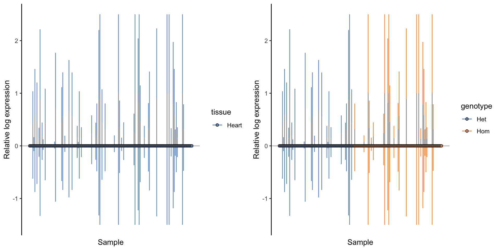
Inspect dimensionality reduction plots coloured by QC metrics:
PCA
var <- c("tissue", "genotype", "log10_total_counts", "log10_total_features_by_counts", "pct_counts_ERCC", "pct_counts_MT")
plt <- lapply(var, function(x) plotPCA(new, colour_by = x))
wrap_plots(plt, ncol = 2)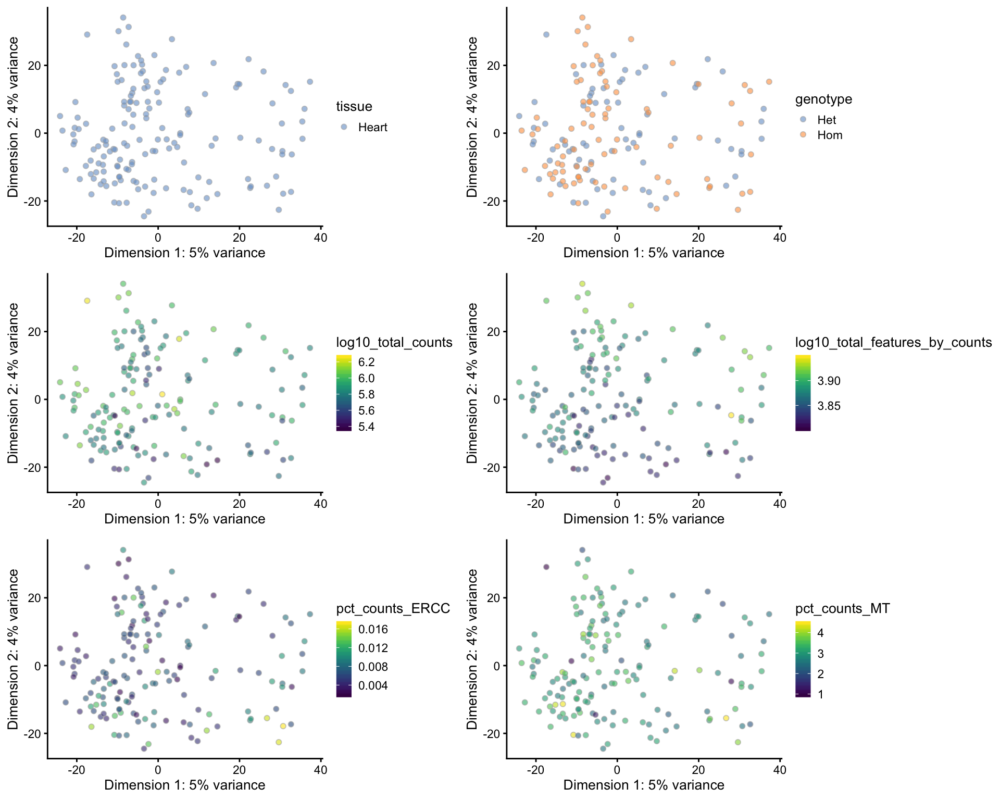
TSNE
var <- c("tissue", "genotype", "log10_total_counts", "log10_total_features_by_counts", "pct_counts_ERCC", "pct_counts_MT")
plt <- lapply(var, function(x) plotTSNE(new, colour_by = x))
wrap_plots(plt, ncol = 2)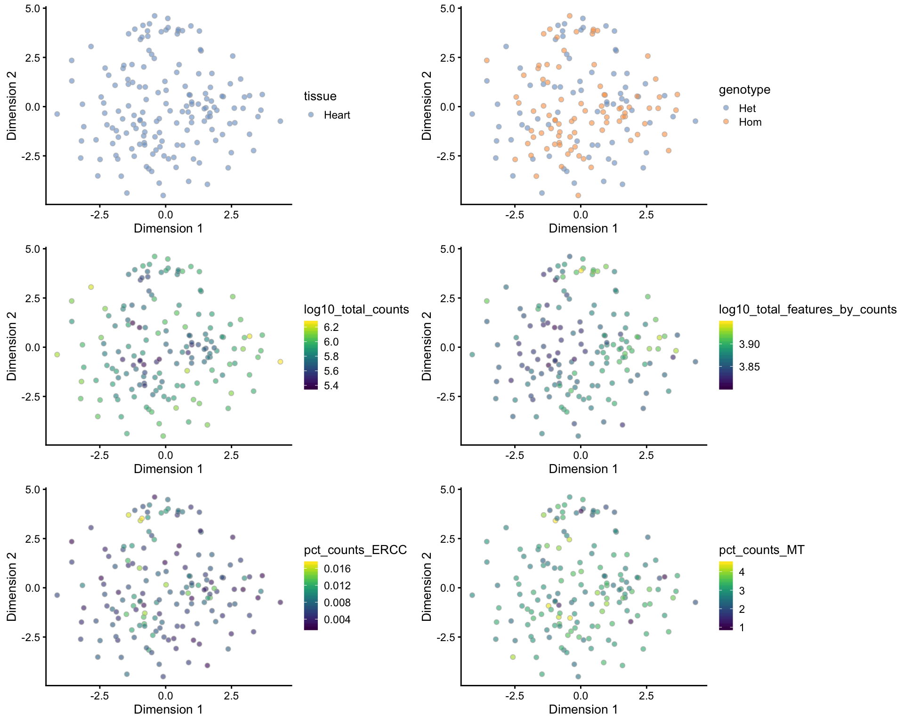
UMAP
var <- c("tissue", "genotype", "log10_total_counts", "log10_total_features_by_counts", "pct_counts_ERCC", "pct_counts_MT")
plt <- lapply(var, function(x) plotUMAP(new, colour_by = x))
wrap_plots(plt, ncol = 2)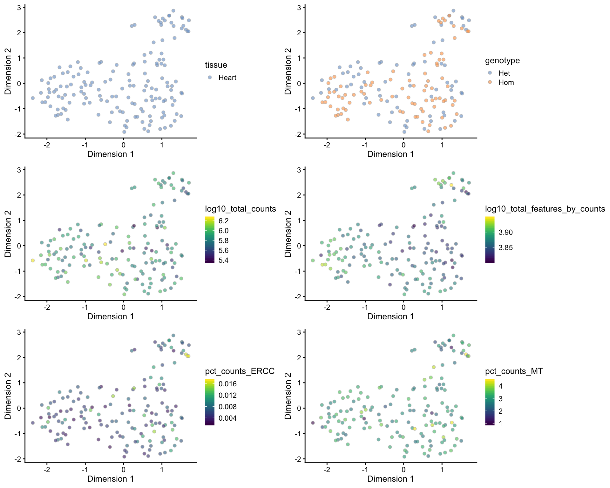
Library
Compute expression values from raw counts by scaling with library size factors:
set.seed(1701)
sizeFactors(new) <- librarySizeFactors(new)
new <- computeSpikeFactors(new, general.use = FALSE)
new <- logNormCounts(new)
new <- runPCA(new)
new <- runTSNE(new)
new <- runUMAP(new)Inspect relative log expression plots coloured by column data:
var <- c("tissue", "genotype")
plt <- lapply(var, function(x) plotRLE(new, colour_by = x))
wrap_plots(plt, ncol = 2)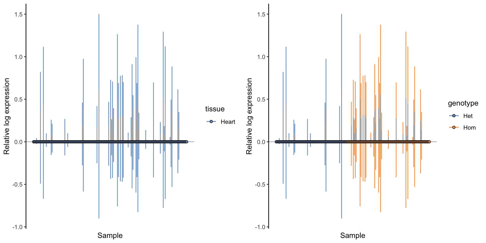
Inspect dimensionality reduction plots coloured by QC metrics:
PCA
var <- c("tissue", "genotype", "log10_total_counts", "log10_total_features_by_counts", "pct_counts_ERCC", "pct_counts_MT")
plt <- lapply(var, function(x) plotPCA(new, colour_by = x))
wrap_plots(plt, ncol = 2)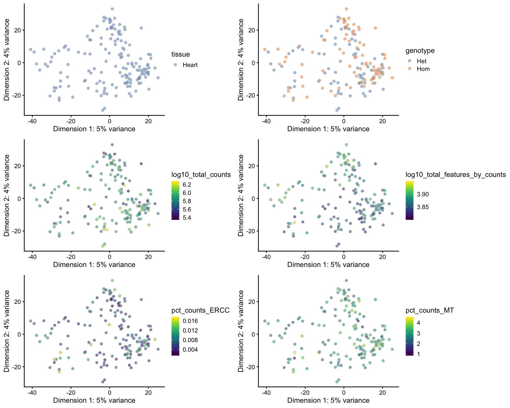
TSNE
var <- c("tissue", "genotype", "log10_total_counts", "log10_total_features_by_counts", "pct_counts_ERCC", "pct_counts_MT")
plt <- lapply(var, function(x) plotTSNE(new, colour_by = x))
wrap_plots(plt, ncol = 2)
UMAP
var <- c("tissue", "genotype", "log10_total_counts", "log10_total_features_by_counts", "pct_counts_ERCC", "pct_counts_MT")
plt <- lapply(var, function(x) plotUMAP(new, colour_by = x))
wrap_plots(plt, ncol = 2)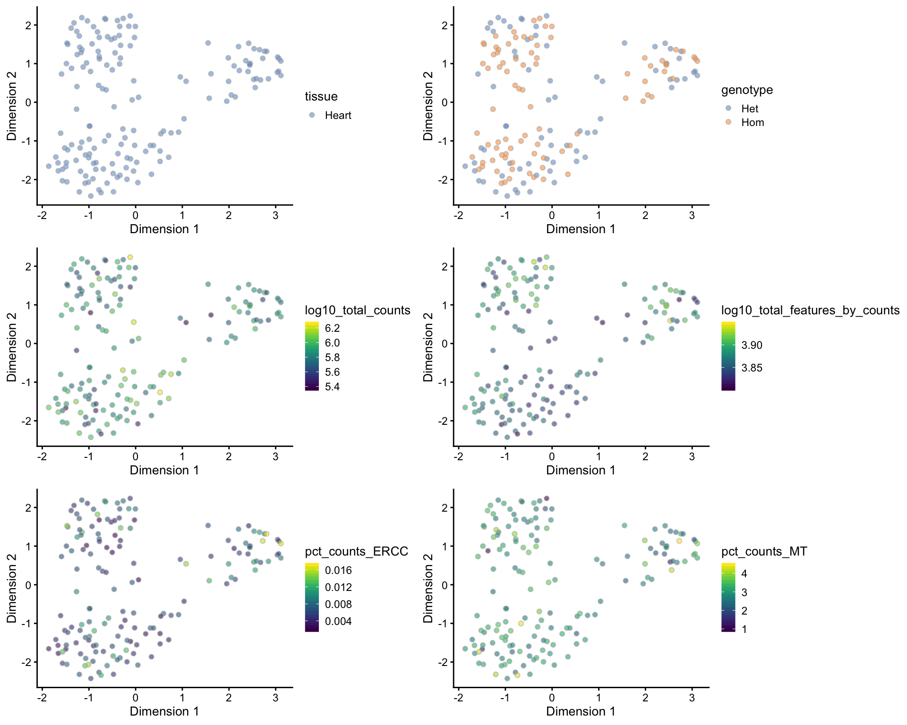
Deconvolution
Compute expression values from raw counts by scaling with “deconvolved” size factors:
set.seed(1701)
cls <- quickCluster(new, use.ranks = FALSE)
new <- computeSumFactors(new, cluster = cls, min.mean = 1)
new <- computeSpikeFactors(new, general.use = FALSE)
new <- logNormCounts(new)
new <- runPCA(new)
new <- runTSNE(new)
new <- runUMAP(new)Inspect relative log expression plots coloured by column data:
var <- c("tissue", "genotype")
plt <- lapply(var, function(x) plotRLE(new, colour_by = x))
wrap_plots(plt, ncol = 2)
Inspect dimensionality reduction plots coloured by QC metrics:
PCA
var <- c("tissue", "genotype", "log10_total_counts", "log10_total_features_by_counts", "pct_counts_ERCC", "pct_counts_MT")
plt <- lapply(var, function(x) plotPCA(new, colour_by = x))
wrap_plots(plt, ncol = 2)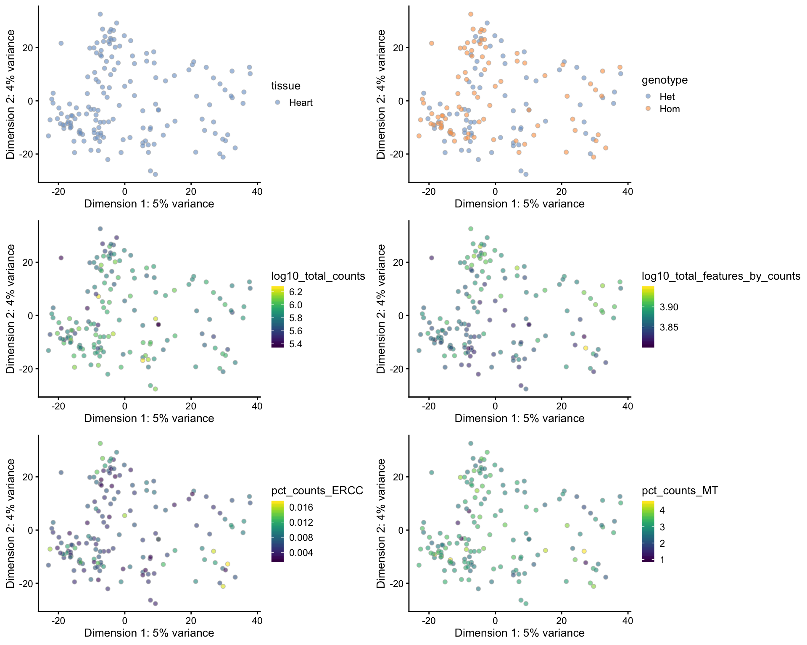
TSNE
var <- c("tissue", "genotype", "log10_total_counts", "log10_total_features_by_counts", "pct_counts_ERCC", "pct_counts_MT")
plt <- lapply(var, function(x) plotTSNE(new, colour_by = x))
wrap_plots(plt, ncol = 2)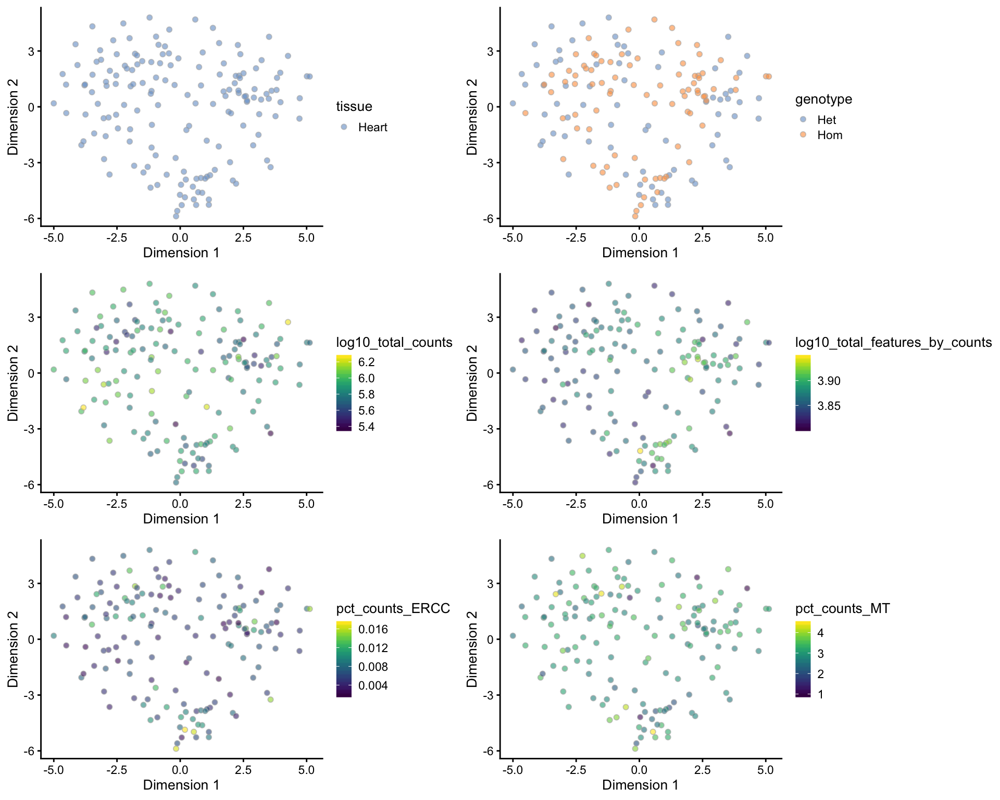
UMAP
var <- c("tissue", "genotype", "log10_total_counts", "log10_total_features_by_counts", "pct_counts_ERCC", "pct_counts_MT")
plt <- lapply(var, function(x) plotUMAP(new, colour_by = x))
wrap_plots(plt, ncol = 2)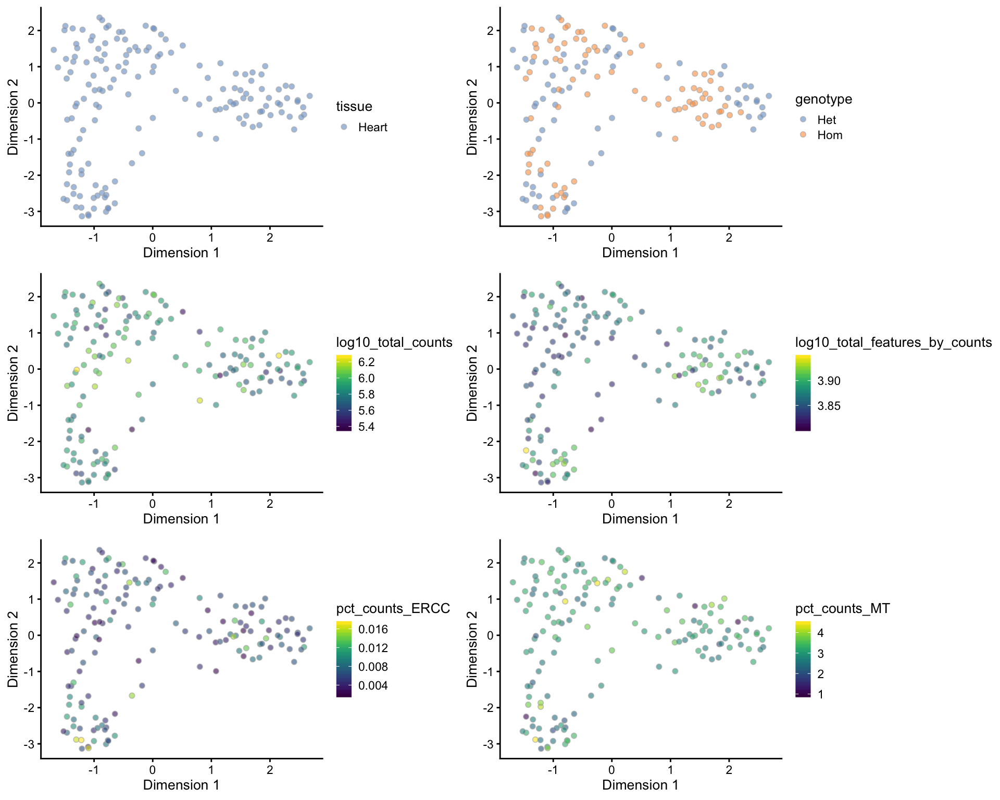
Spike
Compute expression values from raw counts by scaling with spike-in size factors:
set.seed(1701)
new <- computeSpikeFactors(new, general.use = TRUE)
new <- logNormCounts(new)
new <- runPCA(new)
new <- runTSNE(new)
new <- runUMAP(new)Inspect relative log expression plots coloured by column data:
var <- c("tissue", "genotype")
plt <- lapply(var, function(x) plotRLE(new, colour_by = x))
wrap_plots(plt, ncol = 2)
Inspect dimensionality reduction plots coloured by QC metrics:
PCA
var <- c("tissue", "genotype", "log10_total_counts", "log10_total_features_by_counts", "pct_counts_ERCC", "pct_counts_MT")
plt <- lapply(var, function(x) plotPCA(new, colour_by = x))
wrap_plots(plt, ncol = 2)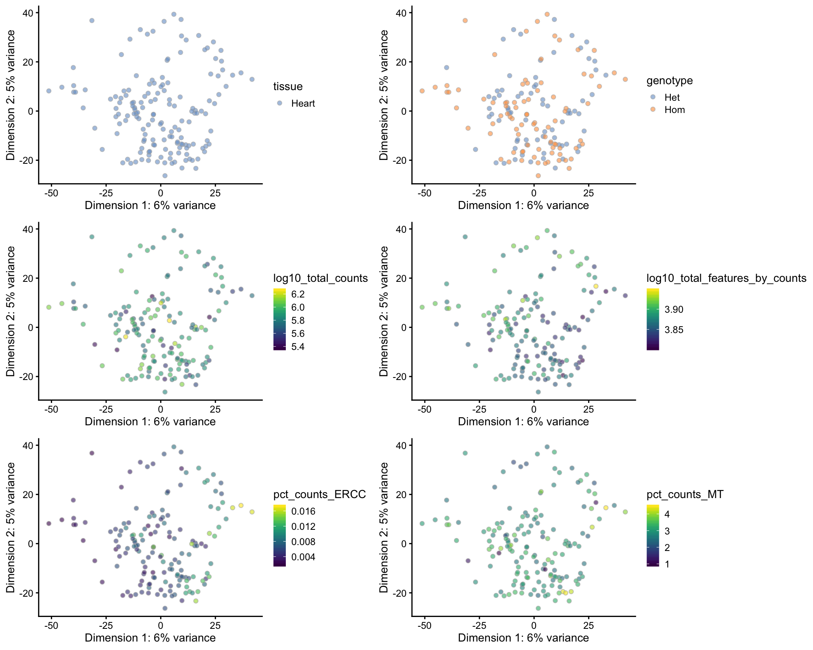
TSNE
var <- c("tissue", "genotype", "log10_total_counts", "log10_total_features_by_counts", "pct_counts_ERCC", "pct_counts_MT")
plt <- lapply(var, function(x) plotTSNE(new, colour_by = x))
wrap_plots(plt, ncol = 2)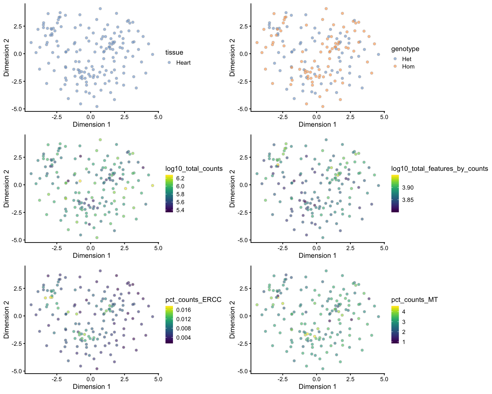
UMAP
var <- c("tissue", "genotype", "log10_total_counts", "log10_total_features_by_counts", "pct_counts_ERCC", "pct_counts_MT")
plt <- lapply(var, function(x) plotUMAP(new, colour_by = x))
wrap_plots(plt, ncol = 2)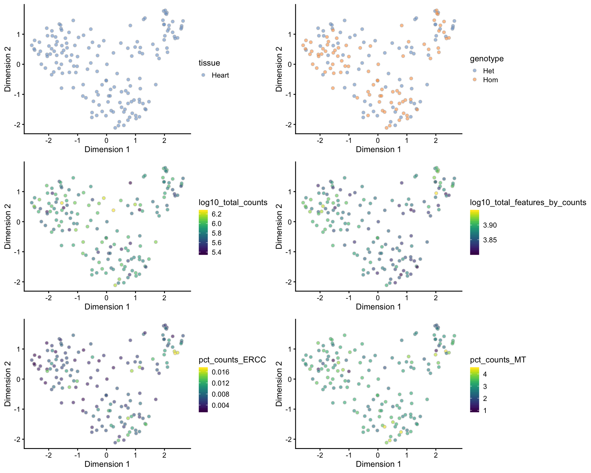
Downsample
Compute expression values from raw counts by downsampling:
set.seed(1701)
lib <- librarySizeFactors(new)
fct <- min(lib) / lib
counts(new) <- DropletUtils::downsampleMatrix(counts(new), prop = fct)
sizeFactors(new) <- librarySizeFactors(new)
new <- logNormCounts(new)
new <- runPCA(new)
new <- runTSNE(new)
new <- runUMAP(new)Inspect relative log expression plots coloured by column data:
var <- c("tissue", "genotype")
plt <- lapply(var, function(x) plotRLE(new, colour_by = x))
wrap_plots(plt, ncol = 2)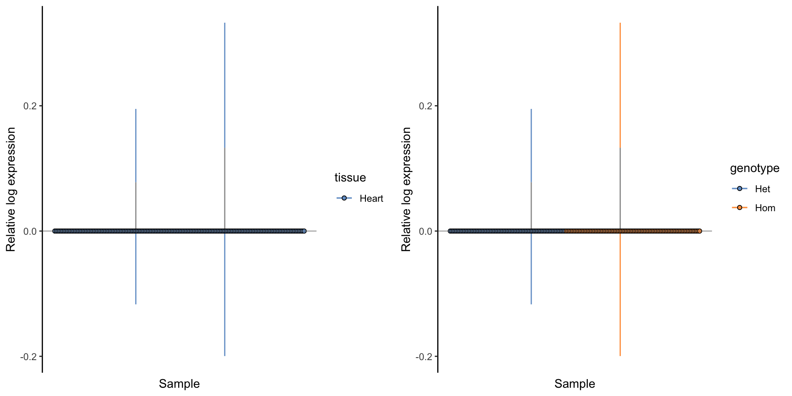
Inspect dimensionality reduction plots coloured by QC metrics:
PCA
var <- c("tissue", "genotype", "log10_total_counts", "log10_total_features_by_counts", "pct_counts_ERCC", "pct_counts_MT")
plt <- lapply(var, function(x) plotPCA(new, colour_by = x))
wrap_plots(plt, ncol = 2)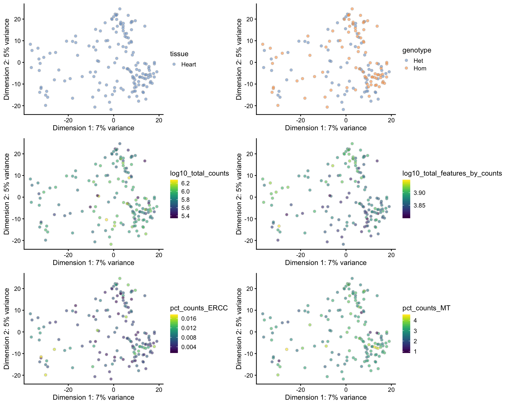
TSNE
var <- c("tissue", "genotype", "log10_total_counts", "log10_total_features_by_counts", "pct_counts_ERCC", "pct_counts_MT")
plt <- lapply(var, function(x) plotTSNE(new, colour_by = x))
wrap_plots(plt, ncol = 2)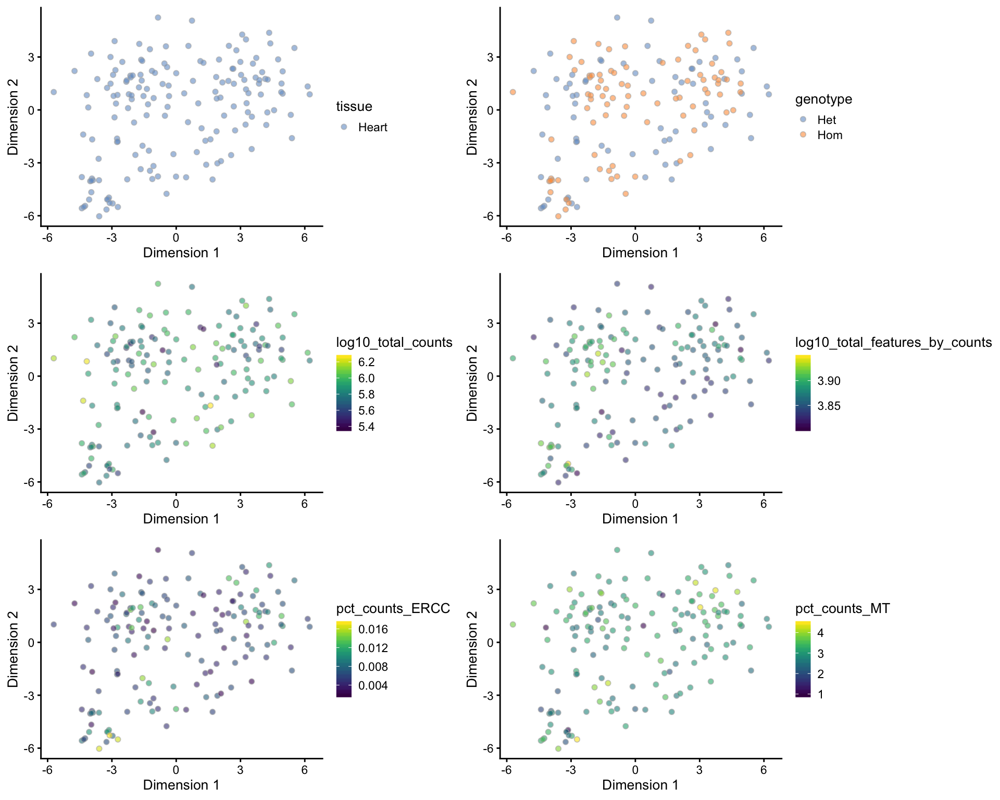
UMAP
var <- c("tissue", "genotype", "log10_total_counts", "log10_total_features_by_counts", "pct_counts_ERCC", "pct_counts_MT")
plt <- lapply(var, function(x) plotUMAP(new, colour_by = x))
wrap_plots(plt, ncol = 2)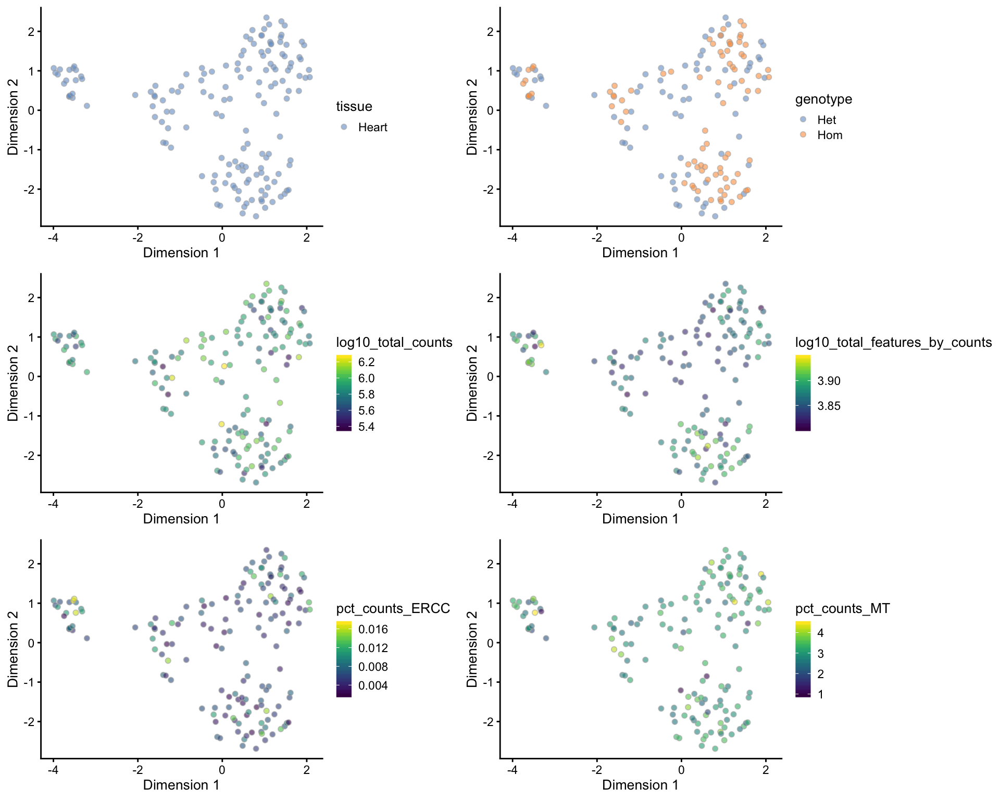
Selection
Apply the chosen normalization to the original experiment data:
set.seed(1701)
cls <- quickCluster(sce, use.ranks = FALSE)
sce <- computeSumFactors(sce, cluster = cls, min.mean = 1)
sce <- computeSpikeFactors(sce, general.use = FALSE)
sce <- logNormCounts(sce)Summary
Output
write_rds(sce, here("data/normalization.Rds"))Session
Print version information:
session_info()─ Session info ──────────────────────────────────────────────────────────
setting value
version R version 3.6.1 (2019-07-05)
os macOS Mojave 10.14.6
system x86_64, darwin15.6.0
ui X11
language (EN)
collate en_GB.UTF-8
ctype en_GB.UTF-8
tz Europe/London
date 2019-10-08
─ Packages ──────────────────────────────────────────────────────────────
package * version date lib
assertthat 0.2.1 2019-03-21 [1]
backports 1.1.4 2019-04-10 [1]
beeswarm 0.2.3 2016-04-25 [1]
Biobase * 2.45.1 2019-09-04 [1]
BiocGenerics * 0.31.5 2019-07-03 [1]
BiocNeighbors 1.3.5 2019-09-15 [1]
BiocParallel * 1.19.2 2019-08-07 [1]
BiocSingular 1.1.7 2019-09-17 [1]
bitops 1.0-6 2013-08-17 [1]
callr 3.3.1 2019-07-18 [1]
cli 1.1.0 2019-03-19 [1]
codetools 0.2-16 2018-12-24 [1]
colorspace 1.4-1 2019-03-18 [1]
cowplot 1.0.0 2019-07-11 [1]
crayon 1.3.4 2017-09-16 [1]
DelayedArray * 0.11.4 2019-07-03 [1]
DelayedMatrixStats 1.7.2 2019-09-08 [1]
desc 1.2.0 2018-05-01 [1]
devtools * 2.2.0 2019-09-07 [1]
digest 0.6.20 2019-07-04 [1]
dplyr 0.8.3 2019-07-04 [1]
dqrng 0.2.1 2019-05-17 [1]
DropletUtils 1.5.7 2019-08-25 [1]
DT 0.9 2019-09-17 [1]
edgeR 3.27.13 2019-09-01 [1]
ellipsis 0.2.0.1 2019-07-02 [1]
evaluate 0.14 2019-05-28 [1]
FNN 1.1.3 2019-02-15 [1]
fs 1.3.1 2019-05-06 [1]
GenomeInfoDb * 1.21.1 2019-05-16 [1]
GenomeInfoDbData 1.2.1 2019-05-24 [1]
GenomicRanges * 1.37.16 2019-09-13 [1]
ggbeeswarm 0.6.0 2017-08-07 [1]
ggplot2 * 3.2.1 2019-08-10 [1]
git2r 0.26.1 2019-06-29 [1]
glue 1.3.1 2019-03-12 [1]
gridExtra 2.3 2017-09-09 [1]
gtable 0.3.0 2019-03-25 [1]
HDF5Array 1.13.8 2019-09-10 [1]
here * 0.1 2017-05-28 [1]
hms 0.5.1 2019-08-23 [1]
htmltools 0.3.6 2017-04-28 [1]
htmlwidgets 1.3 2018-09-30 [1]
igraph 1.2.4.1 2019-04-22 [1]
IRanges * 2.19.16 2019-09-13 [1]
irlba 2.3.3 2019-02-05 [1]
knitr * 1.25 2019-09-18 [1]
labeling 0.3 2014-08-23 [1]
lattice 0.20-38 2018-11-04 [1]
lazyeval 0.2.2 2019-03-15 [1]
limma 3.41.16 2019-09-09 [1]
locfit 1.5-9.1 2013-04-20 [1]
magrittr 1.5 2014-11-22 [1]
Matrix 1.2-17 2019-03-22 [1]
matrixStats * 0.55.0 2019-09-07 [1]
memoise 1.1.0 2017-04-21 [1]
munsell 0.5.0 2018-06-12 [1]
pacman 0.5.1 2019-03-11 [1]
patchwork * 0.0.1 2019-06-02 [1]
pillar 1.4.2 2019-06-29 [1]
pkgbuild 1.0.5 2019-08-26 [1]
pkgconfig 2.0.2 2018-08-16 [1]
pkgload 1.0.2 2018-10-29 [1]
plyr 1.8.4 2016-06-08 [1]
prettyunits 1.0.2 2015-07-13 [1]
processx 3.4.1 2019-07-18 [1]
ps 1.3.0 2018-12-21 [1]
purrr 0.3.2 2019-03-15 [1]
R.methodsS3 1.7.1 2016-02-16 [1]
R.oo 1.22.0 2018-04-22 [1]
R.utils 2.9.0 2019-06-13 [1]
R6 2.4.0 2019-02-14 [1]
Rcpp 1.0.2 2019-07-25 [1]
RcppParallel 4.4.3 2019-05-22 [1]
RCurl 1.95-4.12 2019-03-04 [1]
readr * 1.3.1 2018-12-21 [1]
remotes 2.1.0 2019-06-24 [1]
reshape2 * 1.4.3 2017-12-11 [1]
rhdf5 2.29.3 2019-09-09 [1]
Rhdf5lib 1.7.5 2019-09-10 [1]
rlang 0.4.0 2019-06-25 [1]
rmarkdown 1.15 2019-08-21 [1]
rprojroot 1.3-2 2018-01-03 [1]
RSpectra 0.15-0 2019-06-11 [1]
rsvd 1.0.2 2019-07-29 [1]
Rtsne 0.15 2018-11-10 [1]
S4Vectors * 0.23.23 2019-09-13 [1]
scales 1.0.0 2018-08-09 [1]
scater * 1.13.20 2019-09-17 [1]
scran * 1.13.20 2019-09-17 [1]
sessioninfo 1.1.1 2018-11-05 [1]
SingleCellExperiment * 1.7.9 2019-09-12 [1]
statmod 1.4.32 2019-05-29 [1]
stringi 1.4.3 2019-03-12 [1]
stringr 1.4.0 2019-02-10 [1]
SummarizedExperiment * 1.15.9 2019-09-11 [1]
testthat 2.2.1 2019-07-25 [1]
tibble 2.1.3 2019-06-06 [1]
tidyselect 0.2.5 2018-10-11 [1]
usethis * 1.5.1 2019-07-04 [1]
uwot 0.1.3 2019-04-07 [1]
vctrs 0.2.0 2019-07-05 [1]
vipor 0.4.5 2017-03-22 [1]
viridis 0.5.1 2018-03-29 [1]
viridisLite 0.3.0 2018-02-01 [1]
whisker 0.4 2019-08-28 [1]
withr 2.1.2 2018-03-15 [1]
workflowr 1.4.0 2019-06-08 [1]
xfun 0.9 2019-08-21 [1]
XVector 0.25.0 2019-05-02 [1]
yaml 2.2.0 2018-07-25 [1]
zeallot 0.1.0 2018-01-28 [1]
zlibbioc 1.31.0 2019-05-02 [1]
source
CRAN (R 3.6.0)
CRAN (R 3.6.0)
CRAN (R 3.6.0)
Bioconductor
Bioconductor
Bioconductor
Bioconductor
Bioconductor
CRAN (R 3.6.0)
CRAN (R 3.6.0)
CRAN (R 3.6.0)
CRAN (R 3.6.1)
CRAN (R 3.6.0)
CRAN (R 3.6.0)
CRAN (R 3.6.0)
Bioconductor
Bioconductor
CRAN (R 3.6.0)
CRAN (R 3.6.0)
CRAN (R 3.6.0)
CRAN (R 3.6.0)
CRAN (R 3.6.0)
Bioconductor
CRAN (R 3.6.1)
Bioconductor
CRAN (R 3.6.0)
CRAN (R 3.6.0)
CRAN (R 3.6.0)
CRAN (R 3.6.0)
Bioconductor
Bioconductor
Bioconductor
CRAN (R 3.6.0)
CRAN (R 3.6.0)
CRAN (R 3.6.0)
CRAN (R 3.6.0)
CRAN (R 3.6.0)
CRAN (R 3.6.0)
Bioconductor
CRAN (R 3.6.0)
CRAN (R 3.6.0)
CRAN (R 3.6.0)
CRAN (R 3.6.0)
CRAN (R 3.6.0)
Bioconductor
CRAN (R 3.6.0)
CRAN (R 3.6.1)
CRAN (R 3.6.0)
CRAN (R 3.6.1)
CRAN (R 3.6.0)
Bioconductor
CRAN (R 3.6.0)
CRAN (R 3.6.0)
CRAN (R 3.6.1)
CRAN (R 3.6.0)
CRAN (R 3.6.0)
CRAN (R 3.6.0)
CRAN (R 3.6.0)
Github (thomasp85/patchwork@fd7958b)
CRAN (R 3.6.0)
CRAN (R 3.6.0)
CRAN (R 3.6.0)
CRAN (R 3.6.0)
CRAN (R 3.6.0)
CRAN (R 3.6.0)
CRAN (R 3.6.0)
CRAN (R 3.6.0)
CRAN (R 3.6.0)
CRAN (R 3.6.0)
CRAN (R 3.6.0)
CRAN (R 3.6.0)
CRAN (R 3.6.0)
CRAN (R 3.6.0)
CRAN (R 3.6.0)
CRAN (R 3.6.0)
CRAN (R 3.6.0)
CRAN (R 3.6.0)
CRAN (R 3.6.0)
Bioconductor
Bioconductor
CRAN (R 3.6.0)
CRAN (R 3.6.0)
CRAN (R 3.6.0)
CRAN (R 3.6.0)
CRAN (R 3.6.0)
CRAN (R 3.6.0)
Bioconductor
CRAN (R 3.6.0)
Bioconductor
Bioconductor
CRAN (R 3.6.0)
Bioconductor
CRAN (R 3.6.0)
CRAN (R 3.6.0)
CRAN (R 3.6.0)
Bioconductor
CRAN (R 3.6.0)
CRAN (R 3.6.0)
CRAN (R 3.6.0)
CRAN (R 3.6.0)
CRAN (R 3.6.0)
CRAN (R 3.6.0)
CRAN (R 3.6.0)
CRAN (R 3.6.0)
CRAN (R 3.6.0)
CRAN (R 3.6.0)
CRAN (R 3.6.0)
CRAN (R 3.6.0)
CRAN (R 3.6.0)
Bioconductor
CRAN (R 3.6.0)
CRAN (R 3.6.0)
Bioconductor
[1] /Library/Frameworks/R.framework/Versions/3.6/Resources/library